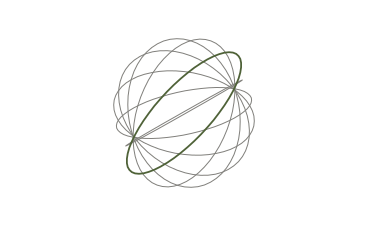

Orbital studies
Seven tilted rings, seen from a single viewpoint.

Construction
A circle viewed at an angle becomes an ellipse. Each successive ring changes its tilt and radius. The accent traces the outermost ring through the intersections.